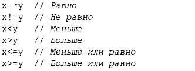

Арифметические операторы могут использоваться для создания соответствующих выражений в комбинации с фундаментальными типами:
То же возможно и для операторов сравнения:
Кроме того, имеются логические операторы:
Побитовый логический оператор дает результат типа операнда, для которого операция была выполнена с каждым битом. Логические операторы && и || просто возвращают значение true или false в зависимости от значений их операндов.
В присваиваниях и арифметических операциях С++ выполняет все необходимые преобразования между фундаментальными типами, так что они могут свободно сочетаться в различных операциях:
Преобразования, используемые в выражениях, называются обычными арифметическими преобразованиями, и призваны обеспечить вычисление выражений с точностью, соответствующей наивысшей точности его операндов. Например, сложение типов douЫe и int вычисляется с помощью арифметики с плавающей точкой двойной точности.
Обратите внимание, что = является оператором присваивания, а оператором проверки на равенство является оператор ==.
В дополнение к обычным арифметическим и логическим операторам С++ предлагает более специфичные операторы для изменения переменных:
Эти операторы ясны, удобны и очень часто используются.
Порядок вычисления выражений - слева направо, за исключением присваиваний, которые вычисляются справа налево. К сожалению, порядок вычисления аргументов функции не определен.